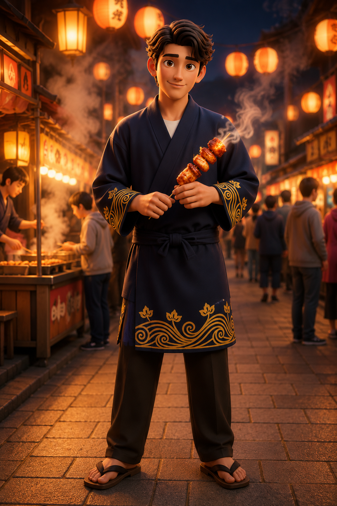

福岡地區・博多
博多水炊鍋男
慢熱湯氣系男嘉賓
「靠近我不用太急，慢慢喝，你會懂。」
湯氣｜慢熱｜博多夜晚｜溫柔｜安心感
每位嘉賓，都帶著一段福岡的故事。
《心動的信號：福岡篇》以福岡縣四大地區為背景， 讓八位由地方味道化身而成的嘉賓入住心動小屋。
他們分別來自福岡地區、北九州地區、筑豐地區與筑後地區。 有人帶著博多夜晚的湯氣與城市溫度，有人帶著港口、工業與海風； 有人承載內陸煤礦地區的記憶，也有人來自茶園、河川與農業平原之間。
節目進入尾聲，八位嘉賓即將迎來在心動小屋的最後相處時光。 請透過福岡心動地圖走進他們的家鄉背景，觀看個人檔案與介紹影片， 最後投出你最喜歡的 CP。
每一段心動，都從家鄉開始。
福岡地區是福岡縣最具都市節奏的地方。博多車站、天神、中洲、屋台與博多灣， 構成了這個地區的日常風景。來自福岡地區的嘉賓， 身上帶著城市的鮮明，也帶著博多夜晚的溫度。
北九州地區位於九州最北端，是九州與本州交會的重要入口。 小倉的城市節奏、八幡的工業記憶，以及門司港的復古街景與海風， 成為這裡獨特的背景。
筑豐地區位於福岡縣內陸，過去因煤礦產業而繁榮。 老商店街、煤礦記憶、山區風景與地方老味道， 讓筑豐成為福岡最有歷史厚度的區域之一。
筑後地區位於福岡縣南部，是河川、平原、農業與地方城市交會的地方。 筑後川、八女茶園、久留米商店街與柳川水鄉， 讓這個地區帶著溫和而生活化的氣息。
每位嘉賓，都帶著一段福岡的故事。
福岡地區・博多
慢熱湯氣系男嘉賓
「靠近我不用太急，慢慢喝，你會懂。」
湯氣｜慢熱｜博多夜晚｜溫柔｜安心感
福岡地區・博多
鮮明直球系女嘉賓
「第一眼就記住我，這不是理所當然的嗎？」
辛香｜直球｜鮮明｜博多名物｜存在感
北九州地區・小倉
外冷內熱系男嘉賓
「別看我外在烤得焦香，真正的驚喜在內在。」
焗烤｜焦香｜北九州｜工業火光｜外冷內熱
北九州地區・門司港
復古海風系女嘉賓
「我不是單純的甘甜，而是揉進海風與港口故事的滋味。」
海風｜復古｜門司港｜甜味｜港町故事
筑豐地區・直方
時代餘溫系男嘉賓
「真正留下來的，是背後那段時代所沉澱的甜味。」
筑豐｜煤礦記憶｜老街｜厚實甜味｜沉穩
筑豐地區・添田
清醒辛香系女嘉賓
「不需要太多份量，真正懂的人只要一點就足夠。」
柚子｜辛香｜添田｜山林｜清醒感

筑後地區・久留米
炭火人情系男嘉賓
「不用想太多，先坐下來，慢慢聊就好。」
炭火｜久留米｜串燒｜人情味｜生活感
筑後地區・八女
茶香回甘系女嘉賓
「有些味道不是瞬間抓住你，而是在心裡慢慢留下餘韻。」
八女｜茶園｜回甘｜安靜｜餘韻
四組 CP 中，你最想把心動信號傳給誰？